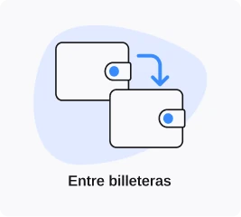
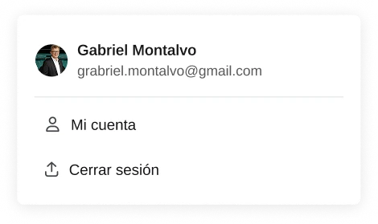
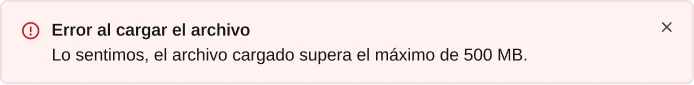
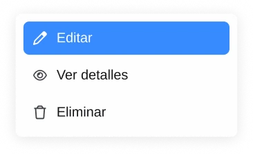
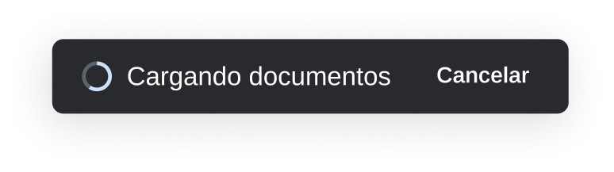
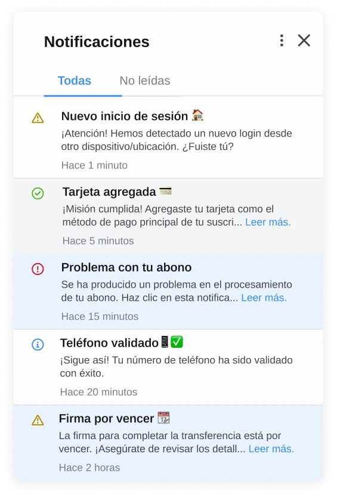
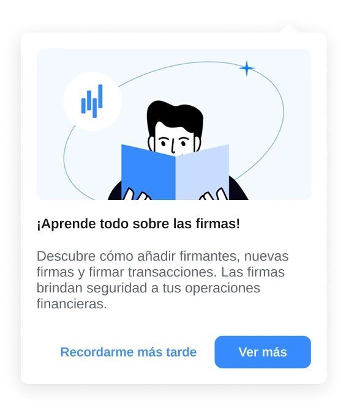
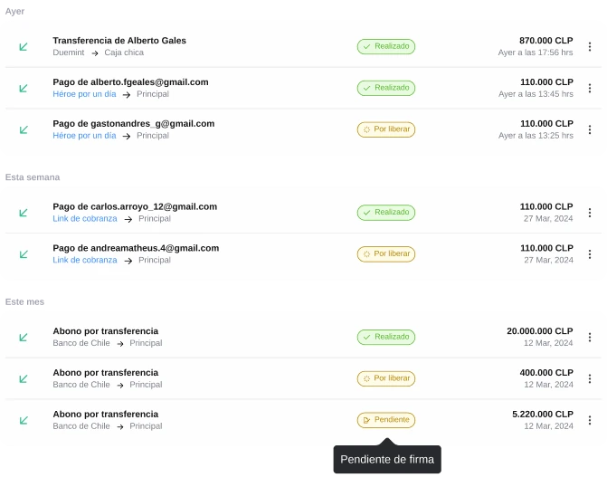
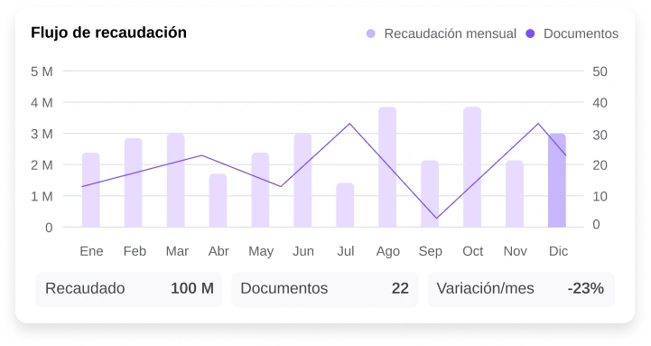
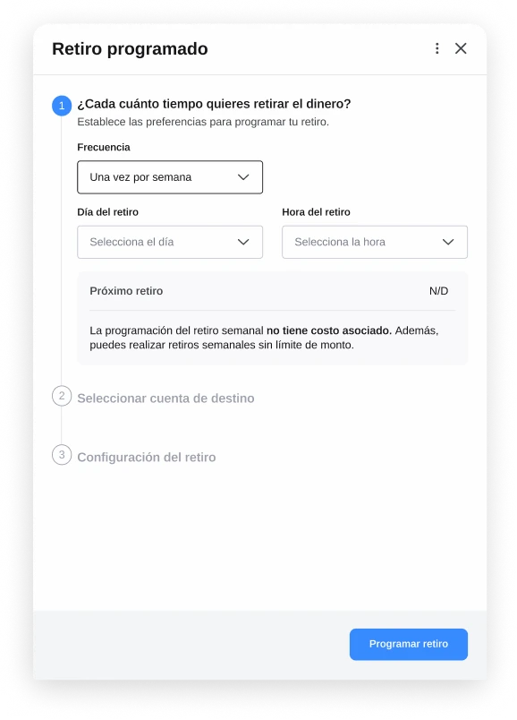

One system, every surface.
Duemint's design system started as a side effect of the product redesign and outgrew that role fast. This is a closer look at the component library that came out of it — built for engineering to implement without guesswork, and for the product to keep scaling without starting from zero each time.
Part of the Duemint product redesign →
Documented in parallel, not after the fact
Instead of treating the design system as clean-up work once screens shipped, we built it alongside the wireframes — redesigning existing components and creating new ones as gaps showed up in testing. Everything went into Storybook with auto-layout, so the same component behaved consistently whether it landed in a settings panel or a transaction modal.
That discipline is what let the system keep evolving after launch — new states and edge cases got documented as they came up, instead of turning into one-off exceptions.
The library, at a glance
Buttons, menus, feedback states, cards, data displays, and multi-step flows — a cross-section of the components in active use across Duemint, all sharing the same visual language.





A few components worth zooming into
Some of the trickier design decisions lived in the details — how a destructive action confirms itself, how a notification earns attention without shouting, how a chart stays legible with real financial data.
Buttons


Menus & dropdowns


Feedback



Cards


Data display


Complex flow

Color & type
Color carries meaning before the user reads a word: blue for primary actions, red reserved strictly for destructive ones, green for confirmation. Everything else stays neutral so those three colors keep their signal value.
Colors sampled directly from shipped screens rather than a hidden style guide — what you see here is what actually renders in the product.
What this project taught me
Giving the design system its own timeline — instead of squeezing it in between feature deadlines — was the single decision that paid off the most. It meant new screens got built faster, not slower, because the components already existed and already worked.
It also changed how I think about documentation: a component isn't finished when it looks right, it's finished when someone who didn't design it can implement it correctly on the first try.